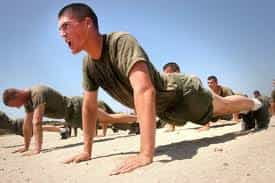
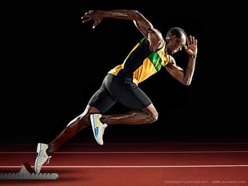
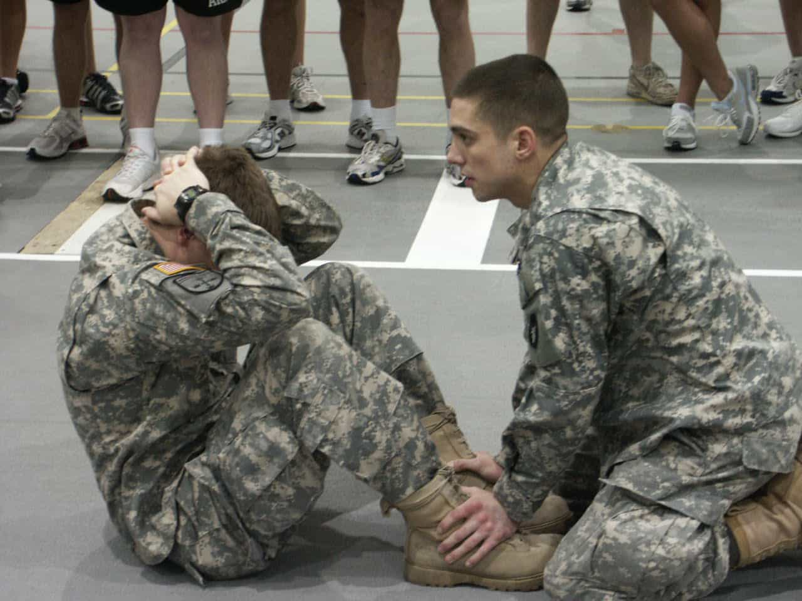

Mikael holds a BA in English Literature with a writing emphasis and also holds a Minor in History. He focuses most of his attention towards physical fitness, sports, small town game, and self improvement.


There is a phrase K.I.S.S. (keep it simple stupid) that I like to use a lot. And when it comes to fitness and working out, a lot of people need to learn to do that. While personally I complicate my workouts, primarily because I have access to a gym, it is a fact that you do not need a complex workout regiment to get in shape. Doing different styles of exercises does help maximize your results, anyone with dedication can get fit with the following four exercises. The key will be doing them in larger amounts than the average person.
This will work your chest, back, biceps triceps, shoulders, and core all in one exercise. Additionally, there are multiple variations you can use from standard, to triangle, fingertip, knuckle, clapping, and elevated. Using the weight of your own body in multiple formats can get you the same reaction as a bench press, including decline, and incline responses.

Similar to push-ups your primary resistance comes from your own body weight. You too get the use of your back, chest, biceps, triceps, shoulder, and core. The most common grips are neutral, standard, and wide, but chin-ups are frequented as well. Depending on your level of advancement you can combine the movement of leg raises with your pull-ups for an extra abdominal push.
As simple as it sounds people forget about the concepts of interval and terrain training. Hiking and jogging give two different responses but can technically be classified as the same exercise. Combining those two with sprints will give your legs an overall workout to tone and shred muscles while building mass. I will admit that shoving around heavy weights is easier for muscle-building on your legs, since historically humans just walked a lot and carried supplies. Combine weighted-bag hikes, sprinting for muscle tearing, and jogging and you’ll have yourself a total leg workout while also making sure your cardio stays up to par.

This is one of the most known about and most debated core exercises out there, but it simply works. Failure with situps and crunches is primarily due to people’s failure to address their diet and fat burning in other areas. A thousand crunches doesn’t do anything if you’re shoving a Big Mac down your throat three times a day. Alternate between situps, crunches, and side crunches for a four-move killer ab workout to help your midsection. Combining the crunch and sit-up with the results of running, push-ups, and pull-ups will give you an overall strong core.

There you have it—four simple yet effective exercises that will get the average person in shape with a decent physique. Just doing something is usually half the battle, and those four exercises hit most of the essential areas without having to do anything too crazy. The key is to take the basic movements and use them in as many variations as possible.
While doing standard push-ups, pull-ups, crunches, and going for a mile jog will get you some results, doing three-position pull-ups, three-position push-ups, sprinting 100 yards eight times, four-variation crunches, and then jogging a mile will boost your body like crazy.
Don’t Miss: Working Out Favors Men